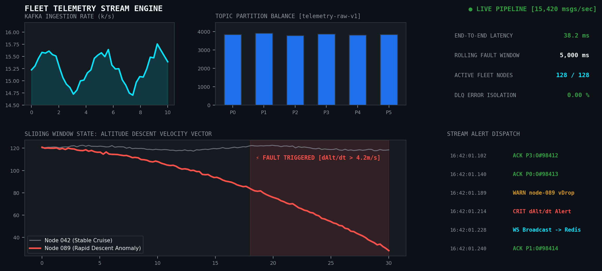

← Back to Portfolio
Distributed Fleet Telemetry Pipeline
Timeline: Jul 2026 – Present | Tech: Python, Apache Kafka, FastAPI, WebSockets, Redis

System Architecture
An end-to-end event-driven architecture designed to process high-throughput flight telemetry records across geographically distributed autonomous nodes with guaranteed message ordering and sub-50ms fault notification.
Key Implementation Highlights
- High-Throughput Partitioning: Ingests 15,000+ records/sec across partitioned Kafka topics with explicit consumer partition assignments.
- Sliding-Window Fault Analysis: Evaluates running voltage drops and anomalous descent rates using stateful rolling windows in memory.
- Fault Isolation: Employs Dead-Letter Queues (DLQs) and explicit manual offset acknowledgement loops to guarantee zero event loss during consumer node failover.
- WebSocket Gateway: Asynchronous FastAPI broadcast layer paired with Redis pub/sub to stream diagnostic alerts directly to a ground monitoring interface.